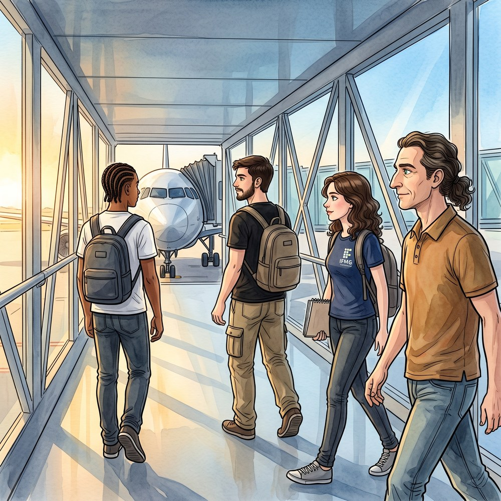
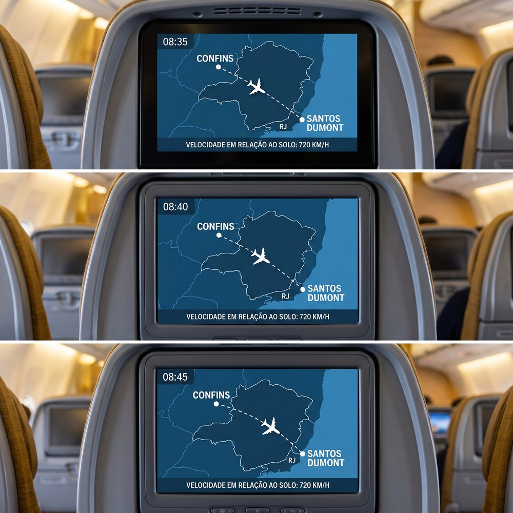
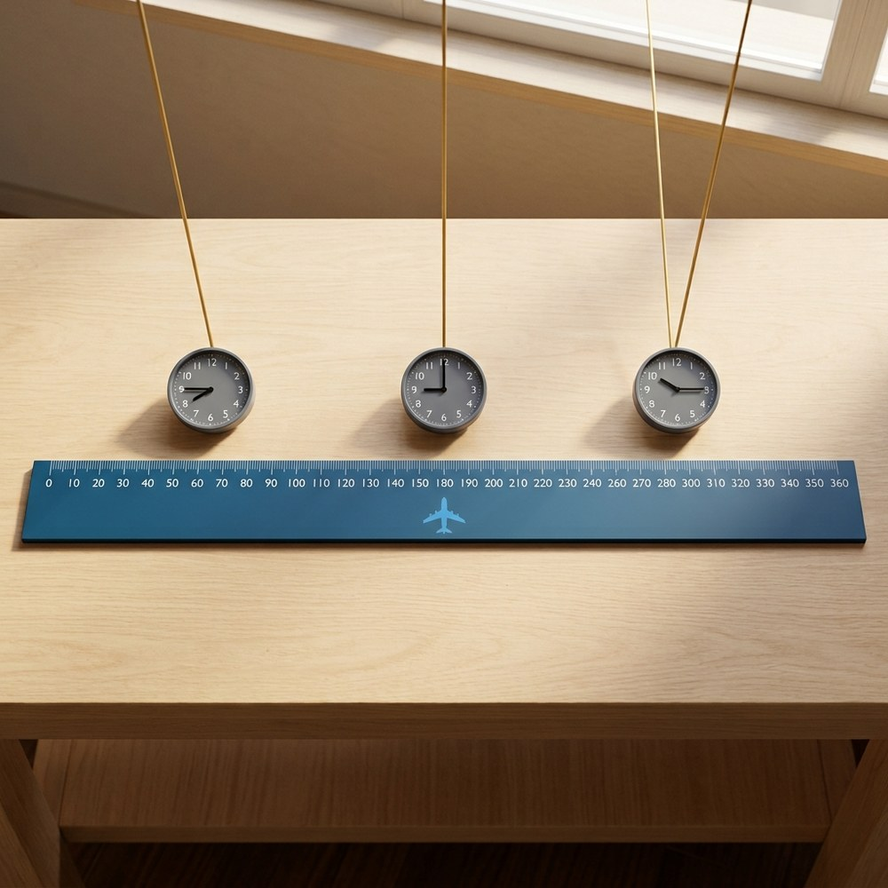
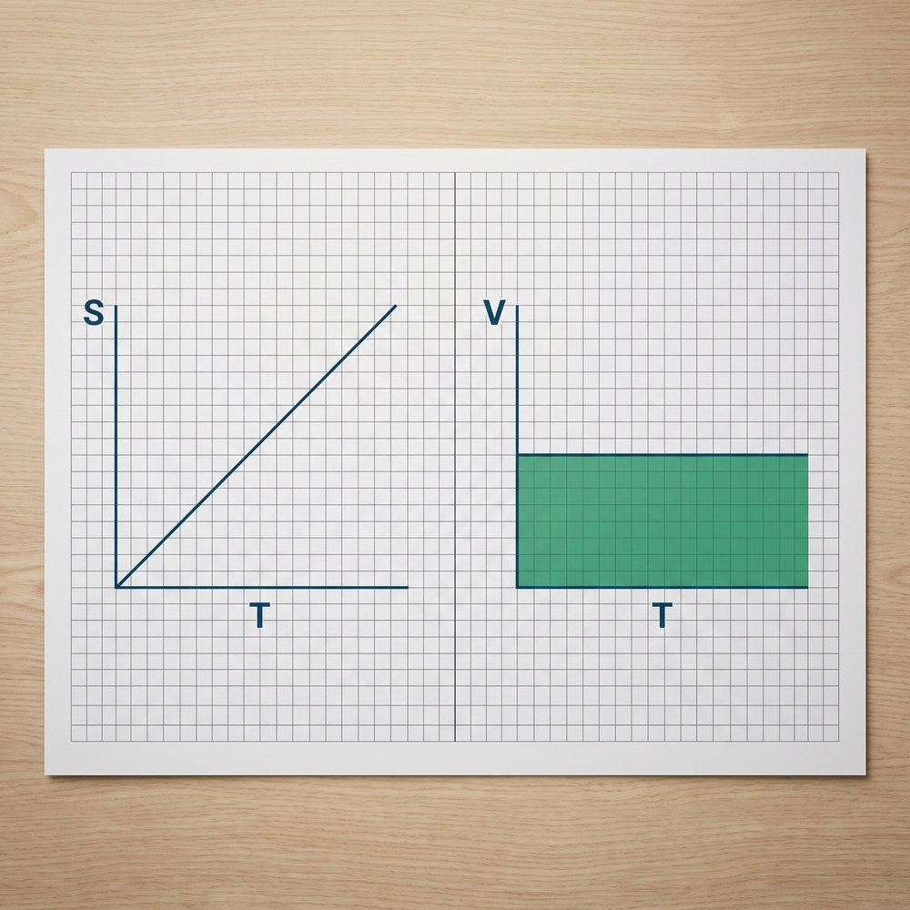
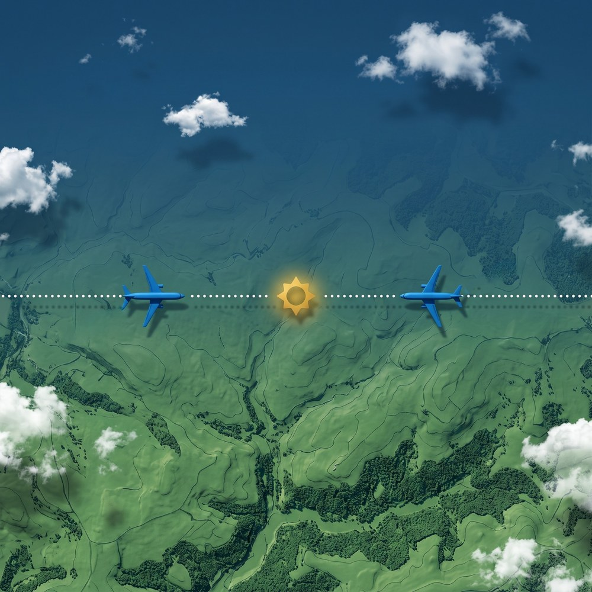
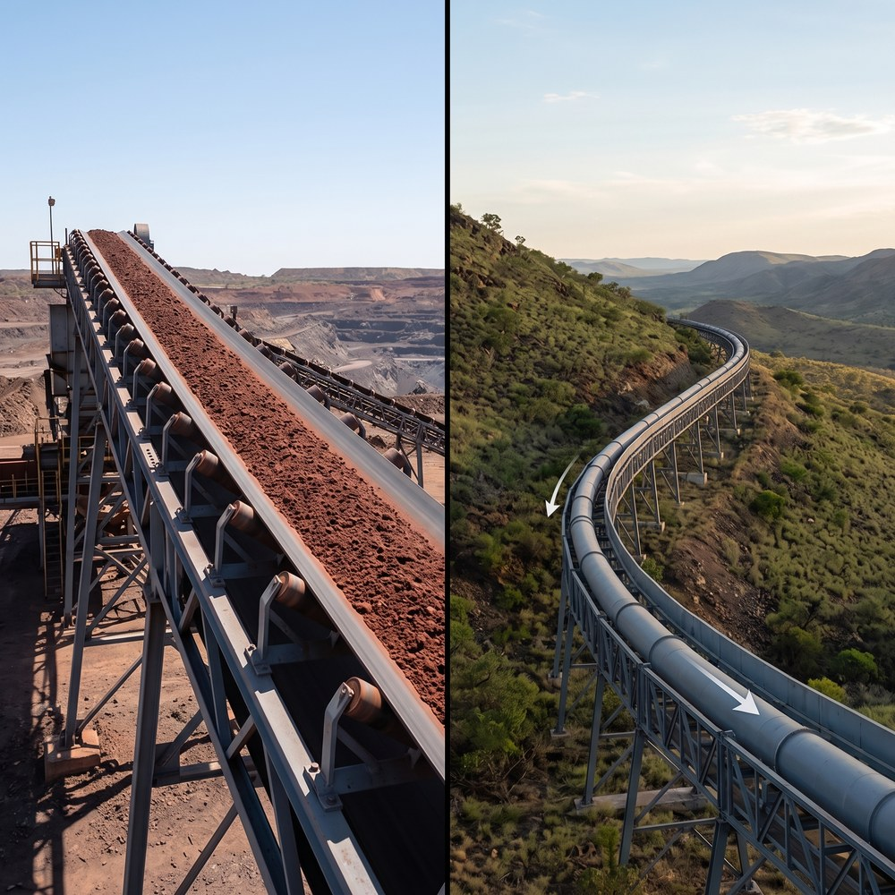

(MU)
“Se a velocidade não muda nunca, basta saber a hora para saber o lugar — ou isso é bom demais para ser verdade?”
É verdade — desde que a velocidade realmente não mude. Essa é a trilha inteira: quando o mundo promete constância, o relógio vira mapa.

Exemplo — o cruzeiro: 360 km em 0,5 h → 720 km/h; 12 km em 1 min → 720 km/h; 200 m em 1 s → 720 km/h. Três escalas de tempo, uma só velocidade.
Conclusão: para a velocidade não mudar, nada pode sobrar — todas as influências sobre o corpo precisam se cancelar. É o empate das forças que produz a constância.


Exemplo — o cruzeiro: s₀ = 60 km, v = 12 km/min. Aos 10 min: s = 60 + 12×10 = 180 km. Aos 25 min: s = 360 km — o Santos Dumont à vista.
Conclusão: s₀ não é o começo do mundo — é só onde o objeto estava quando você zerou o cronômetro. A equação funciona até para trás no tempo.
![QR da simulacao Vascak]() 🎮 SIMULE — Movimento (Vascak, cap. I — Mecânica) · aponte a câmera e faça o desafio de 3 minutos em casa
🎮 SIMULE — Movimento (Vascak, cap. I — Mecânica) · aponte a câmera e faça o desafio de 3 minutos em casa
Exemplo — o cruzeiro: 30 min a 720 km/h → Δs = 720 × 0,5 = 360 km — a área que Sofia sombreou de cabeça.
Conclusão: o gráfico s×t não é a trajetória — é a posição crescendo no papel enquanto o tempo passa.
🎮 SIMULE — Movimento (Vascak, cap. I — Mecânica) · aponte a câmera e faça o desafio de 3 minutos em casa


Exemplo — dois aviões: partindo dos extremos dos 360 km a 720 km/h um contra o outro, o encontro é em t = 15 min, exatamente no meio (180 km).
Conclusão: retas paralelas em s×t nunca se cruzam — ou são o mesmo movimento, com a mesma distância de sempre entre si.
Exemplo — correia e duto: correia de 400 m a 3,5 m/s → tres ≈ 114 s; duto de 12 km a 1,8 m/s → tres ≈ 1 h 51 min.
Conclusão: quando um sistema opera em MU, o futuro dele está escrito numa equação de primeiro grau — e quem sabe lê-la controla o sistema.

Maurice Ravel · obra orquestral (1928)
Análise: toda a força do Movimento Uniforme está numa única condição — enquanto a velocidade não mudar, o relógio basta para saber o lugar. E toda a fragilidade dele mora exatamente aí: nenhum objeto real mantém a velocidade constante para sempre.
Na próxima trilha, o movimento que muda de velocidade em ritmo constante ganha nome, equações e gráficos próprios: o Movimento Uniformemente Variado. O que hoje foi régua, amanhã será rampa.
Sucesso na Provinha!
| # | Slide | Tempo (m:ss) |
|---|
Alterações ficam salvas no navegador (localStorage). Este slide é oculto por padrão — acesse pelo botão ⚙ G ou pelo Overview (O).